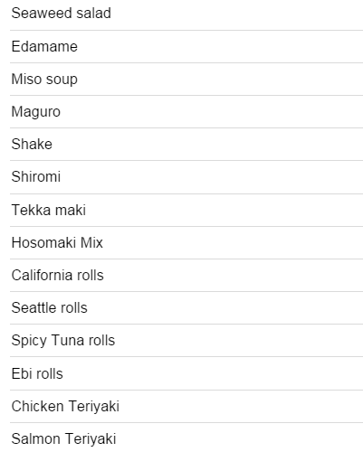
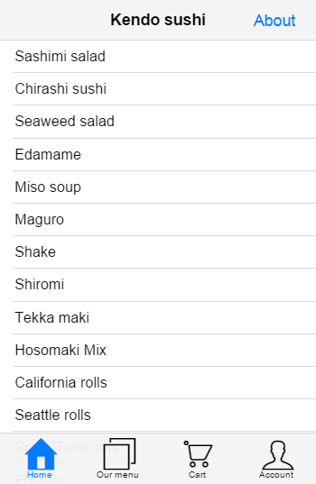

Building the Hybrid UI Sushi Application
As of the Kendo UI Q3 2014 release, the suite includes AngularJS directives for some of its Hybrid UI components such as the hybrid mobile Application and View, the SplitView, and the ModalView.
In this context, the mobile views support AngularJS controllers, directives and two-way data-binding expressions. This article introduces the AngularJS integration with the hybrid mobile widgets in Kendo UI and walks you through the construction of an AngularJS Kendo UI mobile web application.
Description
The Sushi application is a Single Page Application (SPA) built with AngularJS and the Hybrid UI. It has six different views:
- Home—This view uses a ListView widget to show the featured Sushi products.
- Our menu—Shows all available Sushi products in a grouped ListView widget.
- Cart—Shows the added to cart Sushi products.
- Account—Shows a mock account information.
- Details—Shows details for a specific Sushi product. This view uses URL parameters to determine the Sushi product.
- About—This is a remote view.
The full source code of the application is available on GitHub at https://github.com/telerik/kendo-mobile-sushi
For a live preview of the application that you are going to build, click here.
Getting Started
Setting Up
Create a new empty HTML file and include jQuery, AngularJS, and Kendo UI. In this article you are going to load the prerequisites from CDN. Alternatively, you may download and host Kendo UI in your project.
Example
<!DOCTYPE html>
<html>
<head>
<meta charset="utf-8">
<title>Kendo UI Mobile Loves AngularJS</title>
<link rel="stylesheet" href="http://kendo.cdn.telerik.com/2014.3.1029/styles/kendo.mobile.all.min.css">
<!-- the application CSS file -->
<link rel="https://demos.telerik.com/kendo-ui/content/mobile/apps/sushi/css/style.css">
<script src="http://code.jquery.com/jquery-1.9.1.min.js"></script>
<script src="http://ajax.googleapis.com/ajax/libs/angularjs/1.3.0/angular.js"></script>
<script src="http://kendo.cdn.telerik.com/2014.3.1029/js/kendo.all.min.js"></script>
</head>
<body>
</body>
</html>
Important
In order for the AngularJS bindings to be activated, you must load
angular.jsbefore Kendo UI.
Initializing the Application
To initialize the hybrid mobile application, add a kendo-mobile-application attribute to the body element together with the ng-app attribute. The kendo-mobile-application attribute represents an AngularJS directive which is used to flag the html element that Kendo UI should consider to be the root element of our mobile application. This gives developers the freedom to specify if the entire html page or only a portion of it should be treated as Kendo UI Mobile application container.
Important
In order for the Kendo AngularJS directives to be evaluated, you must declare dependency on
kendo.directiveswhen creating the AngularJS application.
Example
<!DOCTYPE html>
<html>
<head>
<meta charset="utf-8">
<title>Kendo UI Mobile Loves AngularJS</title>
<link rel="stylesheet" href="http://kendo.cdn.telerik.com/2014.3.1029/styles/kendo.mobile.all.min.css">
<!-- the application CSS file -->
<link rel="https://demos.telerik.com/kendo-ui/content/mobile/apps/sushi/css/style.css">
<script src="http://code.jquery.com/jquery-1.9.1.min.js"></script>
<script src="http://ajax.googleapis.com/ajax/libs/angularjs/1.3.0/angular.js"></script>
<script src="http://kendo.cdn.telerik.com/2014.3.1029/js/kendo.all.min.js"></script>
</head>
<body kendo-mobile-application ng-app="sushiMobileApp">
<script>
angular.module('sushiMobileApp', [ 'kendo.directives' ])
</script>
</body>
</html>
Creating the Home View
The Home View will display a list of featured products and is also going to be the initial View of the application.
Example
<body kendo-mobile-application ng-app="sushiMobileApp">
<kendo-mobile-view id="index">
Home View
</kendo-mobile-view>
<script>
angular.module('sushiMobileApp', [ 'kendo.directives' ]);
</script>
</body>
Run the application. The screen is expected to display the index View.
For a live preview, click here.
Making the Application SEO-Friendly
To create a SEO (Search Engine Optimization)-friendly mobile application, all you need to do is turn on the hashBang configuration. The configuration can also be set directly in the markup.
Example
<body kendo-mobile-application k-hash-bang="true" ng-app="sushiMobileApp">
Displaying List of Data
Now you have a very basic mobile application running,so it is time to add some data. You are going to create a controller for the index View, a DataSource that will be responsible for loading the data, and a hybrid mobile ListView widget that will be responsible for displaying it.
Adding the View Controller
Create a new AngularJS controller and name it indexController.
Example
angular.module('sushiMobileApp', [ 'kendo.directives' ])
.controller('indexController', ['$scope', function($scope) {
}]);
Use the ng-controller directive to associate the indexController with the index View. The controller definition is going to be executed each time the view is shown.
Example
<kendo-mobile-view id="index" ng-controller="indexController">
Index view
</kendo-mobile-view>
Adding Service and Application DataSource
You are now going to load the data from an external JSON file called menu.json. The data is to be used in multiple application Views which is why the DataSource instance should be shared across multiple controllers. To organize the code, create an AngularJS service called sushiCart that holds the application DataSource and methods. The service is going to be injected later in the mobile View controllers.
Example
.service('sushiCart', function() {
this.init = function() {
//the application DataSource
this.productsDataSource = new kendo.data.DataSource({
transport: {
read: {
url: "content/menu.json",
dataType: "json"
}
}
});
//observable array that will be used to store products that user has selected
this.added = new kendo.data.ObservableArray([]);
//field that will hold reference to the last selected product (used for displaying the details)
this.currentItem = null;
};
})
When the injector finishes loading all modules, run the init method of the sushiCart service. At this point the application DataSource and the observable array are initialized.
Example
angular.module('sushiMobileApp', [ 'kendo.directives' ])
.run(['sushiCart', function(sushiCart){
sushiCart.init();
}])
.service('sushiCart', function() {
/* ... */
})
Last, declare dependency for the sushiCart service in the indexController and assign sushiCart to the scope.
Example
angular.module('sushiMobileApp', [ 'kendo.directives' ])
.run(['sushiCart', function(sushiCart){
sushiCart.init();
}])
.service('sushiCart', function() {
/* ... */
})
.controller('indexController', ['$scope', 'sushiCart', function($scope, sushiCart) {
$scope.sushiCart = sushiCart;
}])
Creating and Binding ListView to DataSource
To insert a ListView in the index view, add a <kendo-mobile-list-view></kendo-mobile-list-view> element and bind the productsDataSource through the k-data-source attribute. It is mandatory to also define a template that determines the way the data is displayed.
Example
<kendo-mobile-list-view id="featured" class="item-list" k-data-source="sushiCart.productsDataSource">
<div k-template></div>
</kendo-mobile-list-view>
Now define a basic template to verify that the data is loaded and displayed correctly. Next, enhance the template with an image, button, and link to details view. If you run the application, now you should be able to see a list of products.
Figure 1: Application displaying a products view

For a live preview, click here.
Adding the Layout
Now, create the application layout. To define a Layout, add a <kendo-mobile-layout> tag to the page and set its id option.
Example
<kendo-mobile-layout k-id="'default'">
<kendo-mobile-header>
<kendo-mobile-nav-bar>
<kendo-view-title></kendo-view-title>
<kendo-mobile-button class="about-button" k-align="'right'" href="content/about-angular.html">About</kendo-mobile-button>
</kendo-mobile-nav-bar>
</kendo-mobile-header>
<kendo-mobile-footer>
<kendo-mobile-tab-strip>
<a href="#!/" data-icon="home">Home</a>
<a href="#!menu" data-icon="organize">Our menu</a>
<a href="#!cart" data-icon="cart">Cart</a>
<a href="#!account" data-icon="contacts">Account</a>
</kendo-mobile-tab-strip>
</kendo-mobile-footer>
</kendo-mobile-layout>
The content inside the <kendo-mobile-header> tag will be used as a header for all View elements that use the default layout. You may include navigation widgets, such as the Button or the TabStrip, in the layout header or footer. They are going to be automatically initialized by the framework after the Layout is created. To tell the index View to use the default layout, set its layout configuration option to be equal to the Layout id.
Example
<kendo-mobile-view id="index" k-title="'Kendo sushi'" k-layout="'default'" ng-controller="indexController">
<kendo-mobile-list-view id="featured" class="item-list" k-data-source="sushiCart.productsDataSource">
<div k-template></div>
</kendo-mobile-list-view>
</kendo-mobile-view>
Important
Notice an important detail in the example above—the
defaultstring is quoted inside the attribute value. Without the single inside, it would be interpreted as a variable name and AngularJS-Kendo UI would look for the$scope.defaultvariable. Since omitting the quotes (') is a common error, AngularJS-Kendo UI is going to emit a warning in the JavaScript console when such variables are not found.
Reload the application and see the new look. Have in mind that at present the Our menu, Cart, Account and About views do not exists yet, which is why clicking on any of the links results in a JavaScript error.
Figure 2: Index view with a layout

For a live preview, click here.
Creating the Our Menu View
The Our Menu View is going to display a list of all products grouped by their first letter in an alphabetical order.
Add a new mobile View called Our Menu and add a new ListView with ID menuList inside. Then create a new controlled called menuController that will handle the functionality in this view. Bind the ListView to the productsDataSource.
Example
<kendo-mobile-view id="menu" k-title="'Menu'" k-layout="'default'" ng-controller="menuController">
<kendo-mobile-list-view id="menuList" class="item-list" k-data-source="sushiCart.productsDataSource">
<div k-template></div>
</kendo-mobile-list-view>
</kendo-mobile-view>
.controller('menuController', ['$scope', 'sushiCart', function($scope, sushiCart) {
$scope.sushiCart = sushiCart;
}])
Using Event Handlers
Now you are going to configure the ListView located in the Home View to display only the featured products and the ListView located in Our Menu View to display a list of all products grouped by their first letter and ordered alphabetically. To do that, use the DataSource API and the beforeShow event of the mobile View.
Add the k-on-before-show attribute to the View elements and specify the event handler name.
Example
<kendo-mobile-view id="index" k-title="'Kendo sushi'" k-layout="'default'" k-on-before-show="filterFeatured()" ng-controller="indexController">
<kendo-mobile-list-view id="featured" class="item-list" k-data-source="sushiCart.productsDataSource">
<div k-template></div>
</kendo-mobile-list-view>
</kendo-mobile-view>
<kendo-mobile-view id="menu" k-title="'Menu'" k-layout="'default'" k-on-before-show="groupByCategory()" ng-controller="menuController">
<kendo-mobile-list-view id="menuList" class="item-list" k-data-source="sushiCart.productsDataSource">
<div k-template></div>
</kendo-mobile-list-view>
</kendo-mobile-view>
The filterFeatured and groupByCategory event handlers should be declared in the controllers and assigned to the scope.
Example
.controller('indexController', ['$scope', 'sushiCart', function($scope, sushiCart) {
$scope.sushiCart = sushiCart;
$scope.filterFeatured= function() {
//remove all groups
$scope.sushiCart.productsDataSource.group([]);
//filter only those records that are featured
$scope.sushiCart.productsDataSource.filter({ field: "featured", operator: "eq", value: true });
}
}])
.controller('menuController', ['$scope', 'sushiCart', function($scope, sushiCart) {
$scope.sushiCart = sushiCart;
$scope.groupByCategory = function() {
//remove all filters
$scope.sushiCart.productsDataSource.filter([]);
//group items by category
$scope.sushiCart.productsDataSource.group({ field: "category" });
}
}])
For a live preview, click here.
Customizing Templates
Now you are going to customize the ListView item template—add the image of the product, information about the price, as well as a button that would allow the user to add the product to the cart. Since both ListViews share the same template, extract it in a separate <script> tag to avoid code duplication.
Example
<script id="menuTemplate" type="text/x-kendo-template">
<kendo-mobile-button k-on-click="sushiCart.addToCart(kendoEvent, dataItem)" data-item-id="">
</kendo-mobile-button>
<a class="details-link" data-role="listview-link" href="\#!details?id=">
<img ng-src="content/images/75/" />
<h2></h2>
<span class="added" ng-show="dataItem.visibleMessage">Item added to cart <span></span> times.</span>
</a>
</script>
Inside the template use the AngularJS directives and the double curly brace notation `` to bind expressions to elements.
Important
It is important to note that this is still a Kendo UI Template, so you must escape the
#symbols.
Before you are able to pass the template to the widgets, assign it to the View controller's scope. Create a service that is going to hold a reference to the template.
Example
.factory('templates', function() {
return {
menuTemplate: $("#menuTemplate").html()
};
})
Next, add dependency for the templates service in indexController and menuController.
Example
.controller('indexController', ['$scope', 'sushiCart', 'templates', function($scope, sushiCart, templates) {
$scope.sushiCart = sushiCart;
$scope.templates = templates;
$scope.filterFeatured= function() {
$scope.sushiCart.productsDataSource.group([]);
$scope.sushiCart.productsDataSource.filter({ field: "featured", operator: "eq", value: true });
}
}])
.controller('menuController', ['$scope', 'sushiCart', 'templates', function($scope, sushiCart, templates) {
$scope.sushiCart = sushiCart;
$scope.templates = templates;
$scope.groupByCategory = function() {
$scope.sushiCart.productsDataSource.filter([]);
$scope.sushiCart.productsDataSource.group({ field: "category" });
}
}])
Last, tell the ListViews to use the new template. Add the k-template="sushiCart.menuTemplate" attribute to the ListView elements.
Example
<!-- featured list -->
<kendo-mobile-list-view id="featured" class="item-list" k-template="templates.menuTemplate" k-data-source="sushiCart.productsDataSource">
</kendo-mobile-list-view>
<!-- all products list -->
<kendo-mobile-list-view id="menuList" class="item-list" k-template="templates.menuTemplate" k-data-source="sushiCart.productsDataSource">
</kendo-mobile-list-view>
Figure 3: A grouped ListView
For a live preview, click here.
Displaying Record Details
Note that in the template an anchor element is added, which leads to a details View, but the link is not functional yet. Now, create and bind the details View. Add a new <kendo-mobile-view> tag with an ID details, create a detailsController, and hook up to the show event of the View.
Example
<kendo-mobile-view id="details" k-transition="'slide'" k-layout="'default'" ng-controller="detailsController" k-on-show="setCurrentItem(kendoEvent)">
<kendo-mobile-header>
<kendo-mobile-nav-bar>
<kendo-mobile-back-button k-align="'left'">Back</kendo-mobile-back-button>
<kendo-view-title>Item</kendo-view-title>
</kendo-mobile-nav-bar>
</kendo-mobile-header>
<kendo-mobile-content>
<img ng-src="content/images/200/" />
<h2></h2>
<p></p>
<kendo-mobile-button id="buy-now" k-on-click="sushiCart.addToCart(kendoEvent)">
<span></span>
</kendo-mobile-button>
<span class="added" ng-show="sushiCart.showLabel()"></span>
</kendo-mobile-content>
</kendo-mobile-view>
In the show event handler set the cart's currentItem and the framework is going to automatically evaluate the template expressions. You are able to obtain the item ID through the query string parameters of the View, then use the DataSource get method to get the dataItem that corresponds to the ID parameter.
Example
.controller('detailsController', ['$scope', 'sushiCart', function($scope, sushiCart){
$scope.sushiCart = sushiCart;
$scope.setCurrentItem = function(kendoEvent) {
var id = parseInt(kendoEvent.view.params.id);
sushiCart.setCurrentItem(id);
}
}])
Important
The ID of the last clicked item is passed through the query string parameters of the navigate URL—
href="\#!details?id=".
Implement the setCurrentItem method in the sushiCart service.
Example
.service('sushiCart', function() {
this.init = function() {
//the application DataSource
this.productsDataSource = new kendo.data.DataSource({
transport: {
read: {
url: "content/menu.json",
dataType: "json"
}
}
});
//observable array that will be used to store products that user has selected
this.added = new kendo.data.ObservableArray([]);
//field that will hold reference to the last selected product (used for displaying the details)
this.currentItem = null;
};
this.setCurrentItem = function(id) {
this.currentItem = this.productsDataSource.get(id);
};
})
Now if the user clicks on an item, the application navigates to a new View and displays the product details.
Figure 4: Product details view

For a live preview, click here.
Creating the Cart View
The Cart View is going to show the Sushi products, added to the cart, as well as the total price and a Checkout button.
Example
<kendo-mobile-view id="cart" k-title="'Cart'" k-layout="'default'" ng-controller="cartController">
<h2 id="total"></h2>
<img src="content/images/sad.png" id="empty-icon">
<kendo-mobile-button id="checkout" class="red-button" href="#!done" k-on-click="sushiCart.checkout()" ng-show="sushiCart.added.length">Checkout</kendo-mobile-button>
<div kendo-mobile-list-view="cartList" id="cartList" class="item-list" k-template="templates.cartItemTemplate" k-data-source="sushiCart.added"></div>
</kendo-mobile-view>
In the cartList ListView, provide information about how many times the item was added to the cart, the total sum, and a Delete button that allows the user to remove it from the cart.
Example
<script id="cartItemTemplate" type="text/x-kendo-template">
<kendo-mobile-button class="red-button" k-on-click="sushiCart.removeItem(kendoEvent, dataItem)" data-item-id=""
> &\\#x2716;
</kendo-mobile-button>
<a class="details-link" data-role="listview-link" href="\#!details?id=">
<img ng-src="content/images/75/" />
<h2> (x )</h2>
<span class="price">total: </span>
</a>
</script>
Add a reference for the cartItemTemplate in the templates service.
Example
.factory('templates', function() {
return {
menuTemplate: $("#menuTemplate").html(),
cartItemTemplate: $("#cartItemTemplate").html()
};
})
Add cartController with a dependency to the sushiCart and templates services.
Example
.controller('cartController', ['$scope', 'sushiCart', 'templates', function($scope, sushiCart, templates){
$scope.sushiCart = sushiCart;
$scope.templates = templates;
}])
Figure 5: An empty cart
For a live preview, click here.
Adding Functionalities
The click event handlers that are added to the template are not yet implemented. Since those methods are used by different views in this application, define the event handlers inside the sushiCart service.
Adding to Cart
The addToCart method is called when the buttons located in Home ListView, Our Menu ListView and Details ListView are clicked.
Example
//in the "sushiCart" service
this.addToCart = function(kendoEvent, dataItem) {
var that = this, item, ordered;
item = dataItem ? dataItem : this.currentItem;
//increment the number which indicates how many times the item is ordered
ordered = item.get("ordered") || 0;
ordered += 1;
item.set("ordered", ordered);
//add the item to the "added" list and show the 'item added to cart xx times' message
if (ordered === 1) {
item.set("visibleMessage", true);
this.added.push(item);
}
//prevent the default behaviour of the anchor tag
kendoEvent.preventDefault();
};
Important
In the event handler a reference to the
dataItemis passed directly through thek-on-click="sushiCart.addToCart(kendoEvent, dataItem)"markup.
Example
<kendo-mobile-button k-on-click="sushiCart.addToCart(kendoEvent, dataItem)" data-item-id="">
</kendo-mobile-button>
Removing from Cart
The removeItem method is called when the Delete button in the Cart ListView is pressed.
Example
//in the "sushiCart" service
this.removeItem = function(kendoEvent, dataItem) {
var item = dataItem,
index = this.added.indexOf(item),
currentView = kendo.mobile.application.view();
item.set("ordered", 0); //reset the ordered number
item.set("visibleMessage", false); //hide the 'Item added to cart xx times' message
this.added.splice(index, 1); //remove the item from the 'added' observable array
//after removing item from the DataSource we should reset the ListView scroller
currentView.scroller.reset();
//prevent the default behaviour of the anchor tag
kendoEvent.preventDefault();
};
Important
In the event handler a reference to the
dataItemis passed directly through thek-on-click="sushiCart.removeItem(kendoEvent, dataItem)"markup.
Example
<kendo-mobile-button class="red-button" k-on-click="sushiCart.removeItem(kendoEvent, dataItem)" data-item-id=""
> &\\#x2716;
</kendo-mobile-button>
Checking Out
Now add the Chekout button.
Example
//in the "sushiCart" service
this.checkout = function() {
var that = this,
dataSourceData = this.productsDataSource.data(), //get the dataSource data
length = dataSourceData.length;
setTimeout(function () { //loop through the data
for (idx = 0; idx < length; idx++) {
dataSourceData[idx].set("ordered", 0); //reset the ordered field
}
that.added = []; //clear the added array
}, 400);
};
The checkout method is called when the Checkout button in the Cart ListView is pressed.
Example
<kendo-mobile-button id="checkout" class="red-button" href="#!done" k-on-click="sushiCart.checkout()" ng-show="sushiCart.added.length">Checkout</kendo-mobile-button>
Calculating the Total Price
The showTotal method is called when the user navigates to the Cart View. It calculates and returns the total price of all items added to the cart.
Example
this.showTotal = function() {
var cartItems = this.added,
total = 0;
for(var idx = 0; idx < cartItems.length; idx++) {
total += cartItems[idx].ordered * cartItems[idx].price;
}
return kendo.toString(total, "c"); //format the number
};
The total price is displayed in the Cart View.
Example
<h2 id="total"></h2>
Toggling Visibility of Labels
Example
this.showLabel = function() {
return this.currentItem && this.currentItem.ordered > 0;
};
The showLabel method is used to determine whether the ordered label is to be displayed.
Example
<span class="added" ng-show="sushiCart.showLabel()"></span>
For a live preview, click here.
Creating the Account View
The Account View is going to display some basic information for the user such as the name, email address, and notification preferences. Add a new View with ID account and set its title and layout options. Inside the View, create a ListView widget. Unlike other ListView widgets in the application, this one is not going to be bound to DataSource. Items are directly set in the HTML.
Example
<kendo-mobile-view id="account" k-title="'My Account'" k-layout="'default'">
<kendo-mobile-list-view k-type="'group'">
<li>
Account
<ul>
<li>Username<span class="list-item-data">kendoSushi</span></li>
<li>Email<span class="list-item-data">sushi@kendoui.com</span></li>
</ul>
</li>
<li>
Notifications
<ul>
<li>New products<input type="checkbox" kendo-mobile-switch /></li>
<li>Exclusive promos<input type="checkbox" k-checked="true" kendo-mobile-switch /></li>
</ul>
</li>
</kendo-mobile-list-view>
</kendo-mobile-view>
Note that it is possible to include other widgets in the ListView items—the corresponding directives will be automatically executed. Since this View will not provide any extra functionality it does not need a controller.
For a live preview, click here.
Creating the Done View
The Done View is going to be shown after checkout and is to indicate that the operation was completed successfully.
Example
<kendo-mobile-view id="done">
<kendo-mobile-header>
<kendo-mobile-nav-bar>
<kendo-view-title>Done!</kendo-view-title>
</kendo-mobile-nav-bar>
</kendo-mobile-header>
<kendo-mobile-content class="km-insetcontent">
<img src="content/images/happy.png" id="done-icon">
<h2>Thanks for shopping!</h2>
<h3>Your sushi is on the way.</h3>
<kendo-mobile-button id="done-button" href="#!cart">Done</kendo-mobile-button>
</kendo-mobile-content>
</kendo-mobile-view>
For a live preview, click here.
Handling Remote Views
The hybrid mobile Kendo UI Application can load Views remotely by using AJAX. If the navigational widget href attribute value does not start with a hash (#), the application considers the View to be remote, and issues an AJAX request to the provided URL. For the sake of this example, the last View of this application is a remote one.
Create a folder named content and an empty html file inside it called about-angular.html. In the remote View file, include only the View's markup without any <html>, <head>, or <body> tags. Keep in mind that the content of the remote View is going to be injected in the application via Ajax, so there is no need to include any JavaScript dependencies in the file.
For more information on the hybrid mobile Kendo UI View, refer to this article.
In the about View, include header with a title and a Back button, and a ListView with external links.
Example
<kendo-mobile-view k-transition="'overlay:up'">
<kendo-mobile-header>
<kendo-mobile-nav-bar>
<kendo-mobile-back-button k-align="'left'">Back</kendo-mobile-back-button>
<kendo-view-title>About</kendo-view-title>
</kendo-mobile-nav-bar>
</kendo-mobile-header>
<kendo-mobile-content>
<kendo-mobile-list-view k-type="'group'">
<li>
Photo sources
<ul>
<li><a target="_top" data-rel="external" href="http://www.flickr.com/photos/gpeters/3469819385/">Sashimi salad</a></li>
<!-- more items -->
</ul>
</li>
</ul>
</kendo-mobile-content>
</kendo-mobile-view>
Troubleshooting
If something goes wrong:
- Check for JavaScript errors.
- Check if the issue you encounter is not already described in the troubleshooting article on common issues.
- Check this screen cast as it provides a brief overview of how to easily debug Kendo UI Applications.
See also
Other articles on the integration of Kendo UI hybrid components: